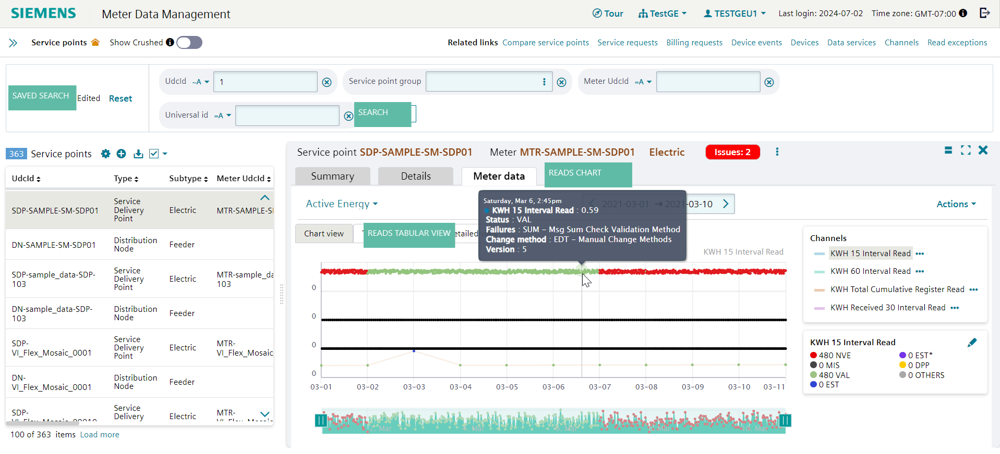
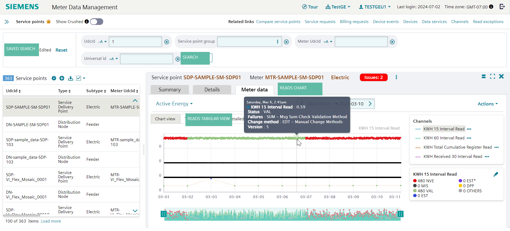

डिवाइस चार्ट
आपका मीटर प्रति किलोवाट घंटा (kWh) के आधार पर लागत की गणना करता है।
एक kWh एक घंटे के लिए इस्तेमाल की जा रही 1000 वाट बिजली पर आधारित है।
अपने मीटर को रोजाना पढ़कर और थोड़ा सा सरल गणित का इस्तेमाल करके,
आप हर महीने अपने बिजली बिल की योजना बनाने में मदद कर सकते हैं। अत्यधिक गर्मी या ठंड के समय में,
हर दिन अपने मीटर को पढ़ने से आपको ऊर्जा बचाने और मौसम से संबंधित उपयोग को कम करने में मदद मिल सकती है।
सबसे पहले यह निर्धारित करें कि आपका आदर्श बिजली बिल कितना होगा और इस सूत्र का उपयोग करें ताकि आप यह पता लगा सकें कि आप हर महीने कितने किलोवाट घंटे का उपयोग कर सकते हैं।
बजट राशि को 0.11 से भाग देने पर (सभी इलेक्ट्रिक) = बजट kWh
बजट kWh को 30 दिनों से भाग देने पर = दैनिक kWh उपयोग लक्ष्य
उदाहरण के लिए, यदि आप चाहते हैं कि आपका बिल $150/माह से अधिक न हो,
$150 को 0.11 से भाग देने पर = 1,364 kWh
1,364 kWh को 30 दिनों से भाग देने पर = 45 kWh प्रति दिन
अपने दैनिक उपयोग की निगरानी करने के लिए, रीड्स
चार्ट दृश्य डिफ़ॉल्ट दृश्य है जहाँ आप चार्ट पर रीड डेटा और उसकी स्थिति देख सकते हैं। जब आप रीड पर होवर करते हैं, तो आप कॉम्पैक्ट व्यू पॉपअप में मीटर रीड जानकारी, जैसे रीड वैल्यू, स्टेटस, फ्लैग, चेंज मेथड, वर्जन और डेल्टा वैल्यू देख सकते हैं। आप डेटा को स्कैन कर सकते हैं और पहचान सकते हैं कि क्या कोई NVE रीड है जिसे ठीक किया जाना है, या कोई फ्लैग है।
आप पेज के दाईं ओर एक पैनल पर चैनल सूची देख सकते हैं।
यह एक बार में अधिकतम चार चैनल दिखाता है। हालाँकि, यदि सेवा बिंदु को कई चैनल रखने के लिए कॉन्फ़िगर किया गया है, तो उन्हें UOM द्वारा शीर्ष बाईं ओर ड्रॉपडाउन के रूप में समूहीकृत किया जाता है, जिसे UOM श्रेणी चयनकर्ता के रूप में भी जाना जाता है, जहाँ आप चैनलों के विभिन्न सेटों में से चुन सकते हैं। अपने माप प्रकारों को परिभाषित करते समय,
सुनिश्चित करें कि आप UOM श्रेणी फ़ील्ड को पॉप्युलेट करें और इसे खाली न छोड़ें। मीटर डेटा पहलू में UOM श्रेणी चयनकर्ता UOM श्रेणी फ़ील्ड के आधार पर पॉप्युलेट किया जाता है।
आप चार्ट पर खींच सकते हैं और ज़ूम कर सकते हैं;
आप पृष्ठ के दाईं ओर उपलब्ध अंतराल संपादक पैनल में रीड्स के बारे में जानकारी देखने के लिए एक चैनल भी चुन सकते हैं। पैनल ज़ूम की गई सीमा में NVE, MIS, EST, VAL, और EST* जैसी विभिन्न स्थितियों के लिए रीड्स की गिनती दिखाता है और इन्हें संपादित करने के लिए एक एक्शन बटन है। यदि चैनल एक रजिस्टर है, तो आपके पास रजिस्टर रीड जोड़ने का विकल्प होगा।


{kind=link}
चित्र:चार्ट दृश्य में अंतराल पठन
{kind=link}
चित्र:चार्ट दृश्य में रजिस्टर रीड्स